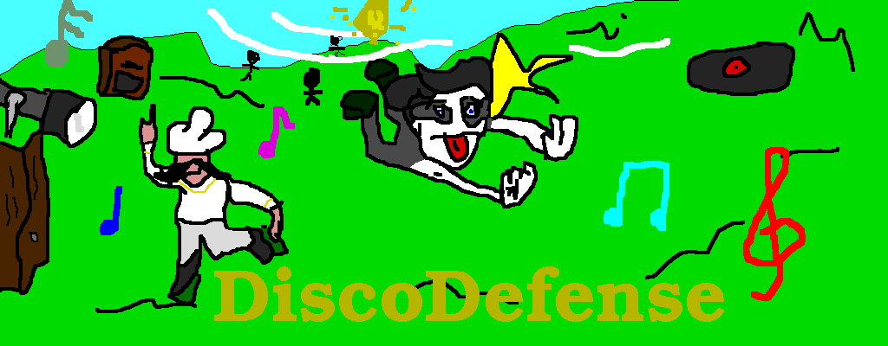
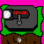
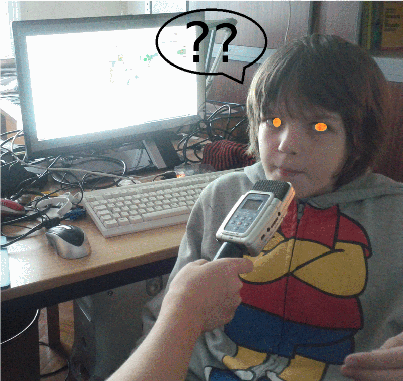
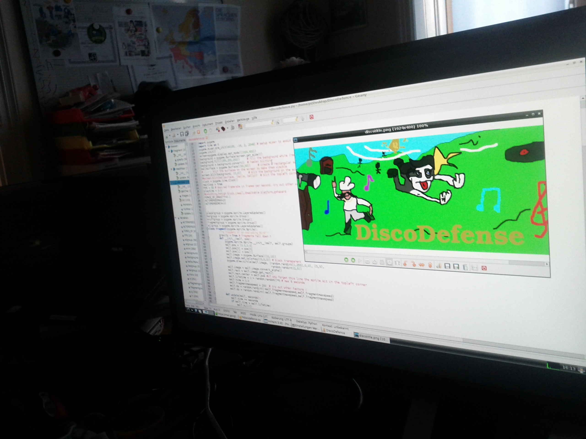
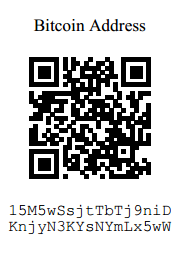

Disco Defense !

Der kommende Spielehit von Broccolimaniac !

Das kommende Spiel von unserem Programmierer Broccolimaniac
befasst sich mit den Themen Discomusik und Tower Defense
Das Interview
 
...mit Broccolimaniac zu seinen kommenden Spiel !
Alex W.: Hallo Broccolimaniac, stell dich mal kurz vor
BM: Ich bin 11 Jahre alt und mein Lieblingshobby ist Programmieren !
Alex W.: Erzähl doch mal kurz um was es sich bei deinem Spiel handelt
BM: Das Spiel ist eine Art von Tower Defense wo es sich um eine Disco
handelt. Darum wird es bei diesem Spiel viele gute Musikstücke aus den
80ern geben !
Alex W.: Wird dieses Spiel von dir Opensource oder willst du dein
geschriebenen Code lieber für dich behalten ?
BM: Mein Spiel wird aufjedenfall Opensource sein, dass bedeuted dass es
für jeden frei veränderbar ist !
Alex W.: Ok, habe gehört du magst Broccoli gar nicht so sehr , warum
dann der Name Broccolimaniac ?
BM: Ich wollte mich eigentlich nur Broccoli benennen aber da dieser
Name bzw. Username in Minecraft leider schon vergeben war bin ich dann auf den Namen Broccolimaniac
gekommen , der mir sofort gefiel , worauf ich mir dachte dass ich ihn
auch als Künstlername verwenden könnte !
Alex W.: Hast du vor diesem Spiel auch andere Spiele programmiert ?
BM: Ja , sehr viele Scratch Spiele , aber auch viele Python Spiele ,
unteranderem eines womit ich einen Preis bei der U19 gewonnen habe
.
Alex W.: Danke für das Interview @BM und wir sind sehr gespannt auf
dieses Spiel und hoffen noch auf viele andere !
BM: Vielen Dank , auf Wiedersehn !
Wenn Sie unserem Hompage-Programmierer Bitcoins spenden wollen scannen sie diesen QR Code z.B mit der App Mycelium ! Danke !!
